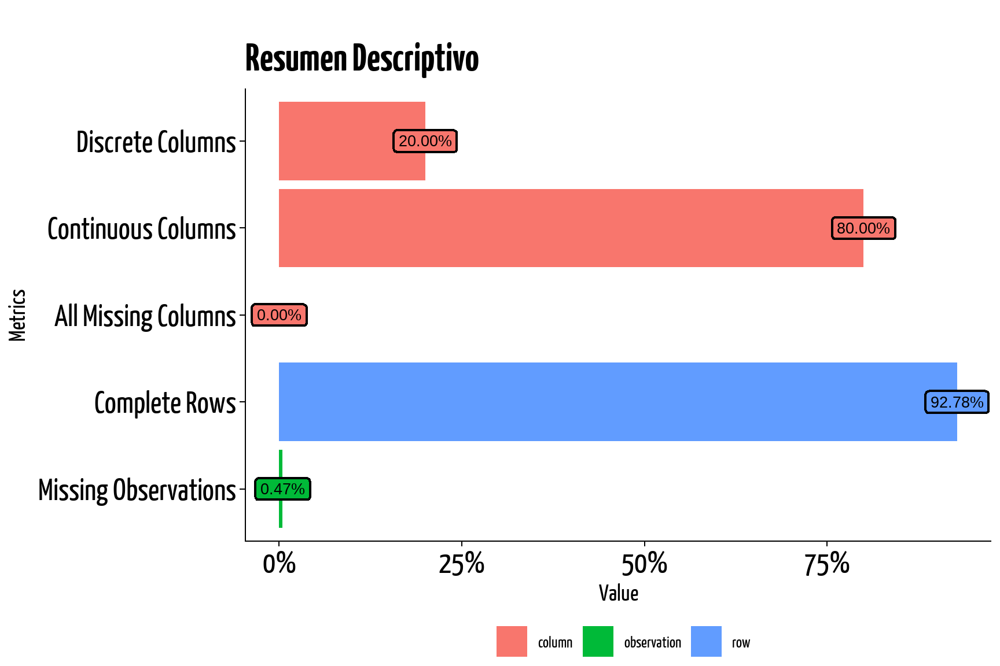
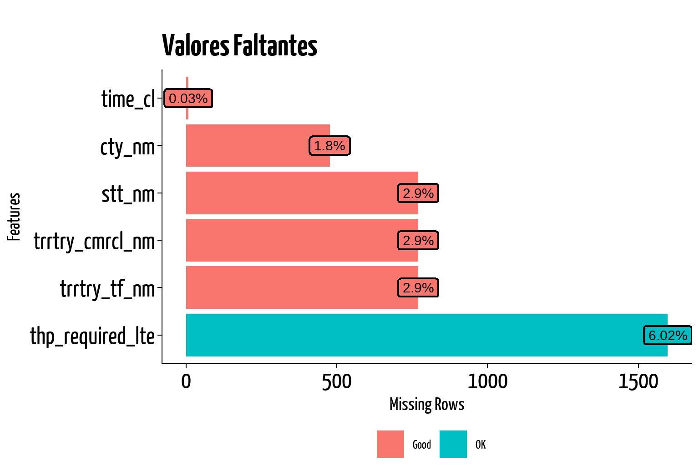
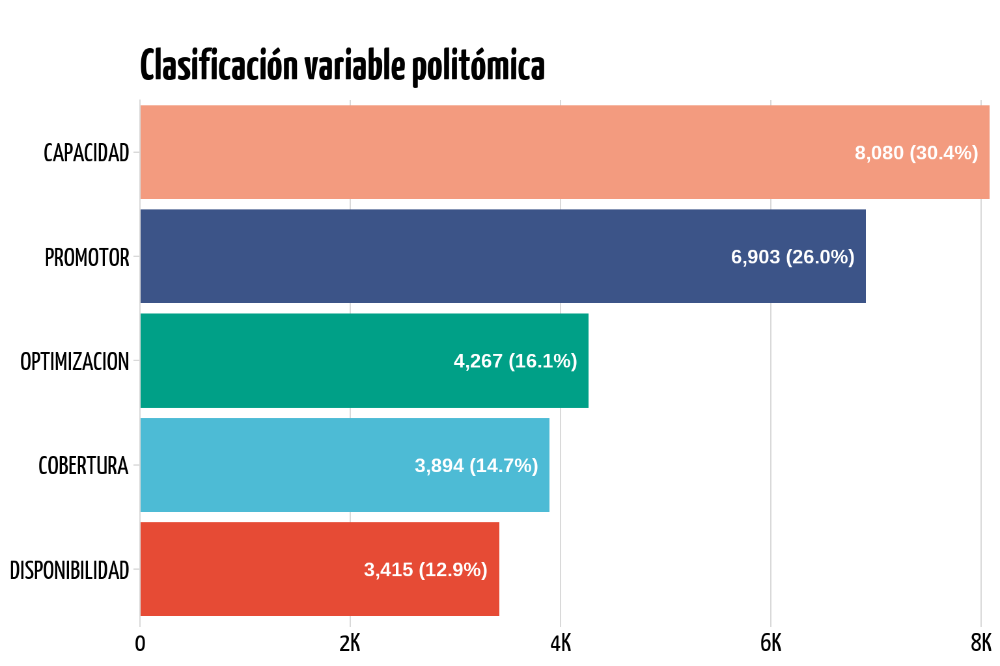

ctl_01 |> glimpse(width = 71)
#> Rows: 26,559
#> Columns: 35
#> $ fct_srvy_dt <date> 2022-01-01, 2022-01-01, 2022-01-01, 2…
#> $ msisdn_dd <int> 48770669, 48770669, 48770669, 48770669…
#> $ srvy_id <int> 541309979, 541309979, 541309979, 54130…
#> $ trrtry_tf_nm <chr> "NOR_ORIENTE", "NOR_ORIENTE", "NOR_ORI…
#> $ trrtry_cmrcl_nm <chr> "ORIENTE", "ORIENTE", "ORIENTE", "ORIE…
#> $ stt_nm <chr> "IZABAL", "IZABAL", "IZABAL", "IZABAL"…
#> $ cty_nm <chr> "EL_ESTOR", "EL_ESTOR", "EL_ESTOR", "E…
#> $ thp_required_lte <dbl> NA, NA, NA, NA, NA, NA, NA, NA, NA, NA…
#> $ bts_sh_nm <chr> "LIZB039B", "LGUA165C", "LGUA165J", "L…
#> $ cll_prctg <dbl> 0.346619192, 0.097322720, 0.108952417,…
#> $ rate_prb_dl <dbl> 0.99124, 0.56140, 0.41380, 0.89256, 0.…
#> $ rrc_success_rate <dbl> 0.9955466, 0.9993186, 0.9987815, 0.997…
#> $ erab_success_rate <dbl> 0.9954686, 0.9994823, 0.9989230, 0.995…
#> $ l_ul_interference_avg <dbl> -116, -109, -116, -104, -118, -110, -1…
#> $ thoughput_dl <dbl> 796.8668, 8419.5650, 7635.8684, 2476.5…
#> $ thpughput_ul <dbl> 247.27017, 766.74849, 371.89887, 262.7…
#> $ corrected_cqi <dbl> 8, 11, 11, 11, 10, 11, 7, 10, 11, 10, …
#> $ ra_ta_ue_index1 <dbl> 0.005732344, 0.256282051, 0.276476101,…
#> $ ra_ta_ue_index2 <dbl> 0.031614350, 0.613306882, 0.535770072,…
#> $ ra_ta_ue_index3 <dbl> 0.143104150, 0.090416944, 0.127476314,…
#> $ ra_ta_ue_index4 <dbl> 0.309353215, 0.004202448, 0.010693721,…
#> $ ra_ta_ue_index5 <dbl> 0.131959911, 0.000000000, 0.000000000,…
#> $ ra_ta_ue_index6 <dbl> 0.321787709, 0.000000000, 0.000000000,…
#> $ ra_ta_ue_index7 <dbl> 0.056191723, 0.000000000, 0.000000000,…
#> $ ra_ta_ue_total <dbl> 11774, 6688, 2571, 19204, 2566, 5228, …
#> $ volte_erlang <dbl> 12.8858889, 12.1652778, 0.1143056, 16.…
#> $ modulation_64qam_ratio <dbl> 0.24526090, 0.65148499, 0.69274165, 0.…
#> $ modulation_16qam_ratio <dbl> 0.4926279, 0.2451231, 0.2429123, 0.230…
#> $ modulation_qpsk_ratio <dbl> 0.25203057, 0.09255258, 0.06352240, 0.…
#> $ time_cl <dbl> 0.7520931, 0.7520931, 0.7520931, 0.752…
#> $ time_lte <dbl> 0.9640478, 0.9640478, 0.9640478, 0.964…
#> $ avlblty <dbl> 1, 1, 1, 1, 1, 1, 1, 1, 1, 1, 1, 1, 1,…
#> $ avlblty_tckt_2hrs <dbl> 0, 0, 0, 0, 0, 0, 0, 0, 0, 0, 0, 0, 0,…
#> $ unvlblty_ttl_hrs_prop <dbl> 0, 0, 0, 0, 0, 0, 0, 0, 0, 0, 0, 0, 0,…
#> $ diag <chr> "CAPACIDAD", "CAPACIDAD", "CAPACIDAD",…6 EDA
6.1 Estructura
El proceso de preparación y limpieza dió como resultado un único set de datos, el cual consta de 26559 filas y 35 columnas.
Mostrar Código
ctl_01 |>
slice_head(n = 5) |>
gt() |>
tab_header(
title = md("**Muestra Aleatoria - CTL**"),
subtitle = md("Tabla principal")
) |>
gt_theme_538() |>
fmt_number(columns = cll_prctg:last_col(), decimals = 2) |>
cols_align_decimal() |>
cols_align(align = "center", columns = where(~ is.numeric(.x))) |>
tab_footnote(
footnote = md("Cada usuario tiene el top 5 celdas a las que más se conecta"),
locations = cells_body(columns = bts_sh_nm, rows = 1))
#> Warning in max(nchar(x_lhs)): no non-missing arguments to max; returning
#> -Inf
#> Warning in max(nchar(x_rhs)): no non-missing arguments to max; returning
#> -Inf| Muestra Aleatoria - CTL | ||||||||||||||||||||||||||||||||||
| Tabla principal | ||||||||||||||||||||||||||||||||||
| fct_srvy_dt | msisdn_dd | srvy_id | trrtry_tf_nm | trrtry_cmrcl_nm | stt_nm | cty_nm | thp_required_lte | bts_sh_nm | cll_prctg | rate_prb_dl | rrc_success_rate | erab_success_rate | l_ul_interference_avg | thoughput_dl | thpughput_ul | corrected_cqi | ra_ta_ue_index1 | ra_ta_ue_index2 | ra_ta_ue_index3 | ra_ta_ue_index4 | ra_ta_ue_index5 | ra_ta_ue_index6 | ra_ta_ue_index7 | ra_ta_ue_total | volte_erlang | modulation_64qam_ratio | modulation_16qam_ratio | modulation_qpsk_ratio | time_cl | time_lte | avlblty | avlblty_tckt_2hrs | unvlblty_ttl_hrs_prop | diag |
|---|---|---|---|---|---|---|---|---|---|---|---|---|---|---|---|---|---|---|---|---|---|---|---|---|---|---|---|---|---|---|---|---|---|---|
| 2022-01-01 | 48770669 | 541309979 | NOR_ORIENTE | ORIENTE | IZABAL | EL_ESTOR | NA | LIZB039B1 | 0.35 | 0.99 | 1.00 | 1.00 | −116.00 | 796.87 | 247.27 | 8.00 | 0.01 | 0.03 | 0.14 | 0.31 | 0.13 | 0.32 | 0.06 | 11,774.00 | 12.89 | 0.25 | 0.49 | 0.25 | 0.75 | 0.96 | 1.00 | 0.00 | 0.00 | CAPACIDAD |
| 2022-01-01 | 48770669 | 541309979 | NOR_ORIENTE | ORIENTE | IZABAL | EL_ESTOR | NA | LGUA165C | 0.10 | 0.56 | 1.00 | 1.00 | −109.00 | 8,419.57 | 766.75 | 11.00 | 0.26 | 0.61 | 0.09 | 0.00 | 0.00 | 0.00 | 0.00 | 6,688.00 | 12.17 | 0.65 | 0.25 | 0.09 | 0.75 | 0.96 | 1.00 | 0.00 | 0.00 | CAPACIDAD |
| 2022-01-01 | 48770669 | 541309979 | NOR_ORIENTE | ORIENTE | IZABAL | EL_ESTOR | NA | LGUA165J | 0.11 | 0.41 | 1.00 | 1.00 | −116.00 | 7,635.87 | 371.90 | 11.00 | 0.28 | 0.54 | 0.13 | 0.01 | 0.00 | 0.00 | 0.00 | 2,571.00 | 0.11 | 0.69 | 0.24 | 0.06 | 0.75 | 0.96 | 1.00 | 0.00 | 0.00 | CAPACIDAD |
| 2022-01-01 | 48770669 | 541309979 | NOR_ORIENTE | ORIENTE | IZABAL | EL_ESTOR | NA | LGUA242D | 0.12 | 0.89 | 1.00 | 1.00 | −104.00 | 2,476.57 | 262.75 | 11.00 | 0.41 | 0.50 | 0.04 | 0.00 | 0.00 | 0.00 | 0.00 | 19,204.00 | 16.30 | 0.67 | 0.23 | 0.11 | 0.75 | 0.96 | 1.00 | 0.00 | 0.00 | CAPACIDAD |
| 2022-01-01 | 48770669 | 541309979 | NOR_ORIENTE | ORIENTE | IZABAL | EL_ESTOR | NA | HIZB039D | 0.06 | 0.49 | 1.00 | 1.00 | −118.00 | 10,559.42 | 365.25 | 10.00 | 0.07 | 0.24 | 0.40 | 0.13 | 0.04 | 0.03 | 0.08 | 2,566.00 | 0.24 | 0.61 | 0.32 | 0.08 | 0.75 | 0.96 | 1.00 | 0.00 | 0.00 | CAPACIDAD |
| 1 Cada usuario tiene el top 5 celdas a las que más se conecta | ||||||||||||||||||||||||||||||||||
Código
plot_intro(
ctl_01,ggtheme = yunkel,
title = "Resumen Descriptivo",
geom_label_args = list(label.size = 0.8, size = 7),
theme_config = list(
axis.text = element_text(size = 40)))
6.2 Medidas repetidas
Código
ctl_01 |>
get_dupes(msisdn_dd) |>
head(5) |>
select(
fct_srvy_dt, msisdn_dd, srvy_id, bts_sh_nm) |>
gt() |>
tab_header(
title = md("**Datos de Perfil**"),
subtitle = md("Medidas repetidas")
) |>
gt_theme_538()| Datos de Perfil | |||
| Medidas repetidas | |||
| fct_srvy_dt | msisdn_dd | srvy_id | bts_sh_nm |
|---|---|---|---|
| 2022-07-01 | 30132206 | 631833809 | LSRS018C |
| 2022-07-01 | 30132206 | 631833809 | LGUA418B |
| 2022-07-01 | 30132206 | 631833809 | OSRS018C |
| 2022-07-01 | 30132206 | 631833809 | LGUA234A |
| 2022-07-01 | 30132206 | 631833809 | LGUA234H |
En la tabla Table 6.2 vemos que el identificador único (número de celular del usuario) se repite, debido a que contamos con datos de perfil
6.3 Valores faltantes
Código
plot_missing(ctl_01, missing_only = TRUE,
ggtheme = yunkel,
title = "Valores Faltantes",
geom_label_args = list(label.size = 0.8, size = 8),
theme_config = list(
axis.text = element_text(size = 40)))
thp_required_lte. Dependiendo de la distribución de los mismos será posible aplicar técnicas de imputación en la fase de preprocesamiento6.4 Resumen estadístico
# crear set de datos solo con variables numéricas
ctl_n <- ctl_01 |>
select(where(is.numeric), -c(msisdn_dd, srvy_id))Mostrar Código
ctl_n |>
resumir() |>
gt() |>
# tab_header(
# title = md("**Resumen Estadístico**"),
# subtitle = md("para *features* Numéricos")
# ) |>
gt_theme_538() |>
cols_align(align = "center", columns = where(~ is.numeric(.x))) |>
fmt_number(columns = where(is.numeric), decimals = 2)| variable | media | mediana | maximo | minimo | sd |
|---|---|---|---|---|---|
| thp_required_lte | 0.92 | 1.00 | 1.00 | 0.00 | 0.19 |
| cll_prctg | 0.16 | 0.09 | 1.00 | 0.00 | 0.17 |
| rate_prb_dl | 0.65 | 0.73 | 1.00 | 0.00 | 0.29 |
| rrc_success_rate | 0.91 | 1.00 | 1.00 | 0.00 | 0.29 |
| erab_success_rate | 0.91 | 1.00 | 1.00 | 0.00 | 0.29 |
| l_ul_interference_avg | −102.47 | −113.00 | 0.00 | −122.00 | 32.76 |
| thoughput_dl | 5,711.13 | 4,324.52 | 87,106.82 | 0.00 | 5,679.44 |
| thpughput_ul | 684.19 | 541.29 | 5,118.24 | 0.00 | 592.48 |
| corrected_cqi | 9.22 | 10.00 | 15.00 | 0.00 | 3.23 |
| ra_ta_ue_index1 | 0.15 | 0.08 | 0.88 | 0.00 | 0.18 |
| ra_ta_ue_index2 | 0.25 | 0.23 | 1.00 | 0.00 | 0.22 |
| ra_ta_ue_index3 | 0.17 | 0.12 | 0.94 | 0.00 | 0.17 |
| ra_ta_ue_index4 | 0.13 | 0.05 | 0.99 | 0.00 | 0.17 |
| ra_ta_ue_index5 | 0.08 | 0.01 | 0.99 | 0.00 | 0.14 |
| ra_ta_ue_index6 | 0.05 | 0.00 | 0.96 | 0.00 | 0.11 |
| ra_ta_ue_index7 | 0.04 | 0.00 | 0.94 | 0.00 | 0.10 |
| ra_ta_ue_total | 7,606.28 | 5,831.00 | 231,144.00 | 0.00 | 7,715.21 |
| volte_erlang | 3.09 | 0.90 | 45.89 | 0.00 | 4.49 |
| modulation_64qam_ratio | 0.52 | 0.56 | 0.98 | 0.00 | 0.24 |
| modulation_16qam_ratio | 0.25 | 0.27 | 0.58 | 0.00 | 0.12 |
| modulation_qpsk_ratio | 0.14 | 0.11 | 0.85 | 0.00 | 0.12 |
| time_cl | 0.90 | 0.97 | 1.00 | 0.00 | 0.16 |
| time_lte | 0.92 | 0.98 | 1.00 | 0.00 | 0.15 |
| avlblty | 1.00 | 1.00 | 1.00 | 0.08 | 0.03 |
| avlblty_tckt_2hrs | 0.03 | 0.00 | 1.00 | 0.00 | 0.08 |
| unvlblty_ttl_hrs_prop | 40.83 | 3.04 | 5,185.17 | 0.00 | 172.22 |
En Table 6.3 se observa que hay valores atípicos en algunas observaciones. Los valores mínimos con valor cero para algunas variables ameritan atención.
6.5 Variable dependiente
Uno de los primeros pasos del proceso de análisis exploratorios cuando el propósito final es predecir una respuesta es crear visualizaciones que ayuden a dilucidar el conocimiento de la respuesta y luego descubrir relaciones entre los predictores y la respuesta (Kuhn and Johnson 2020).
Código
ctl_01 |>
barra(diag) +
theme(legend.position = "none") +
labs(title = "Clasificación variable politómica")